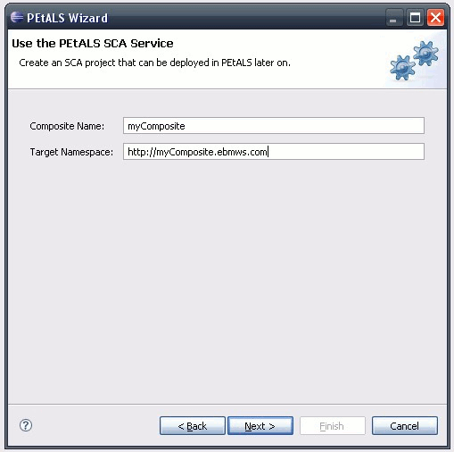
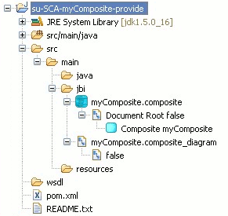
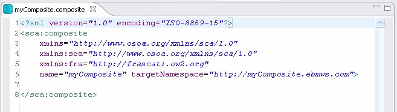

To create an SCA project for Petals, select File > New > Other... and then select Use SCA in the Petals > Use a technical service category.
On the first page, double-click the version to target.
The most recent one is the version 1.0.
The version 0.4 is only kept for research purpose.
On the second page, you are asked the minimum required information to create an SCA application for Petals. Both fields are required and will identify your SCA composite in the project.

Click Next to move on the next page.
Eventually, specify the project properties. This information should be pre-filled with
your preferences and the composite name. Click Finish to end up the wizard.
The generated project is an SCA Java project. It owns the Petals nature, so it can be used the Petals Eclipse tooling. The wizard has generated a composite file and its diagram. There is no jbi.xml file. This is normal. You will generate it once you have finished your SCA application (the jbi.xml content depends the SCA application shape).
 